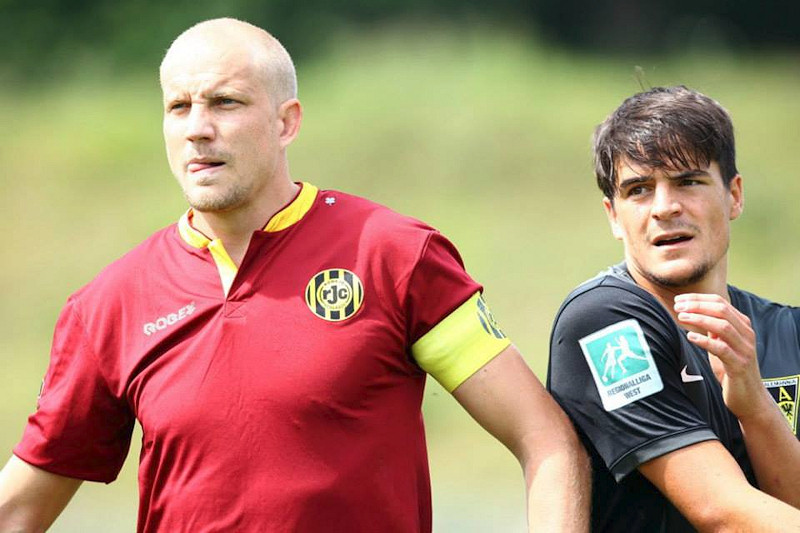
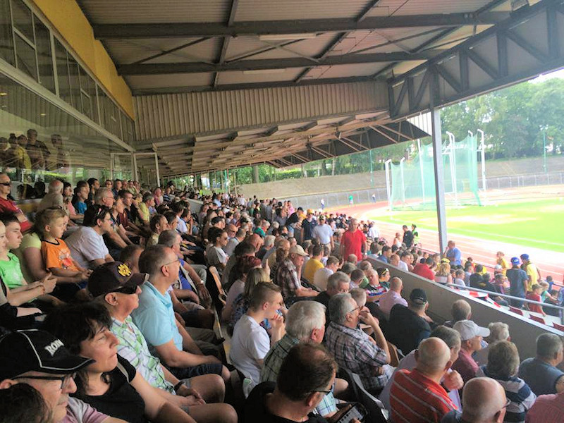

Een ouderwets drukke hoofdtribune op Kaalheide zag een
aanvallend Roda JC in de eerste helft. Veel doelrijpe kansen waren er echter
niet. Na geel voor Letschert en een vrije trap voor Aken van Jerat die hoog
over ging was er voor Rutjes en Lünenbach een gele kaart na een opstootje.
De op rechts vrij gelopen Lagouireh trok in de 32e minuut behendig naar
binnen, dreigde met een schot, nog een dreiging en schoot met links goed op
doel, keeper Löhe kon de bal net naast de goal tikken.


Roda kwam na een goede pass van Paulissen via Jacobs en van Hyfte terug bij
Paulissen in de de Akense zestien. De Kerkraadse speler uit de eigen
jeugdopleiding werd ten val gebracht en de scheidsrechter gaf een penalty
voor Roda. Veroorzaker van de val was Lünenbach die na zijn tweede gele
kaart met rood het veld af moest. Frank Demouge schoot in de 42e minuut de
bal langs keeper Löhe.
In de tweede helft wisselde trainer Trost Thong voor Rutjes, Höcher voor
Paulissen en Wijnen voor Dijkhuizen. Frank Demouge mocht drie minuten koud
in de tweede helft op doel koppen maar de bal ging net naast. Even later
kwam Jerat fors met twee benen op kniehoogte invliegen op Demouge ten koste
van een gele kaart. De sfeer in de vriendschappelijke wedstrijd was even
grimmig, veel duw- en trekwerk aan beide zijden.
Bij een Akense aanval werd de bal niet resoluut uit de zestien gewerkt en
mocht er rechtstreeks doorgelopen worden richting van Leer. Die had een
overtreding nodig om de gelijkmaker te voorkomen. De scheidsrechter wees
naar de stip. Dowidat schoot in de 52e minuut de penalty via de lat over.
Aan de andere kant was het Höcher die de bal net niet over Löhe kon lepelen.
Diezelfde Höcher werd op een flinke overtreding getrakteerd door Garcia die
voor deze actie geel ontving.
Er was een kopkans voor Demouge, van Leer stopte een schot van Duspara en
Brian Jacobs was tweemaal gevaarlijk met een schot. Een opstuitende bal in
de zestien kwam tegen de hand van van Peppen en de scheidsrechter wees voor
de tweede keer naar de stip. Duspara schoot de 1-1 binnen.
In de 71e minuut werden Cicilia en Bösing ingebracht voor Demouge en
Lagouireh. Ruim 10 minuten later was het Daryl Werker die van Peppen
verving. Het centrale verdedigings duo met Letschert en testspeler Crescendo
van Berkel kwam met Benjamin van Leer in de rug nooit echt in gevaar.